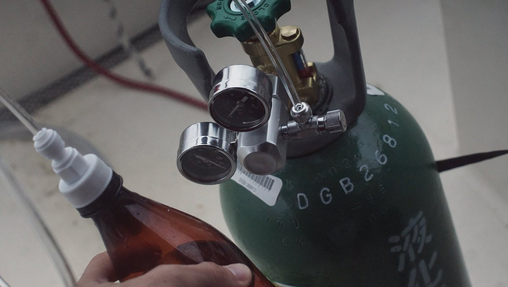
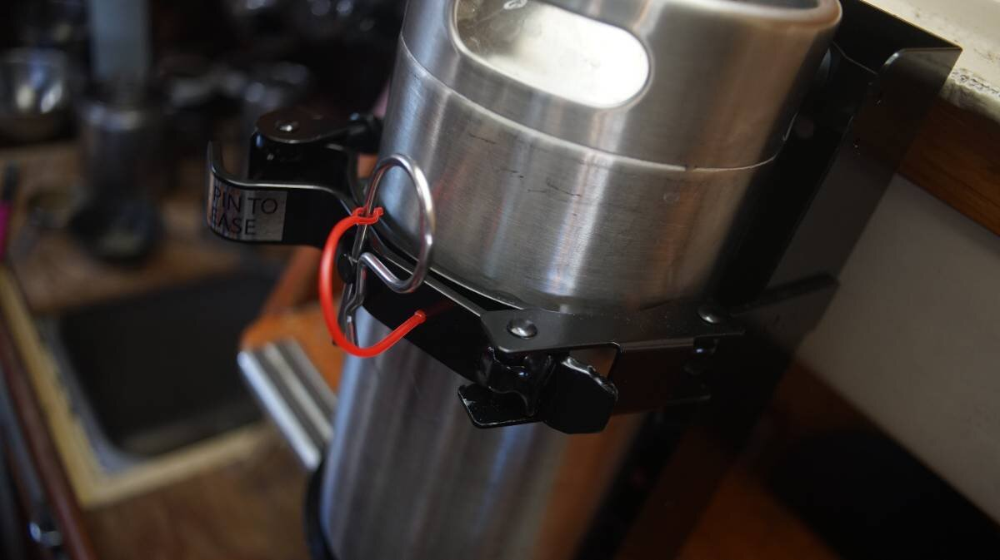

diy carbonation system
23.03.19
Victoria, BC. Canada.
In progress.
We do enjoy having some fizzy water now and again, but hate having to purchase PET bottles for it. We decided against getting a soda stream given the fact that its bottles are proprietary and cannot be filled by anyone other than them (although nowadays you can get fittings to make that possible). Making your own system is way better, and if you've got a big tank it'll last for a long, long time.
The first setup we built while living in japan on Pino consisted of a 5KG CO2 tank, a regulator, a short length of vynil tubing and a coupler to connect the tube to a PET soda bottle. We made this system in May 2019.
Japan, the land of refrigerated(and heated in winter) vending machines dispensing drinks, is not short on PET bottles, so it was easy to find some to re-use. This was a good system, but the tank is rather large and it had to be secured well inside the boat to prevent accidents while sailing. We put it in the closet, and strapped it to the wall. A tank this size lasts a long, long time, but we dreaded having to refill it because of its weight and size (we don't drive).
In the summer of 2022, while we were anchored in hathayim marine park, a boat came by and gave us a box filled with a beer dispensing kit meant for a common friend. The guy had recognized our boat and knew we could get the beer kit to them. Forward to the fall of 2022, we hand off the kit to our friend, but they give us one of the two paintball C02 tanks so we could use that instead of the large 5KG one we already had. Re-filling a paintball tank would be easier, we think. The large steel tank was given away, and then we tried to find a way to fit the regulator we already had to the paintball tank.
We bought a CGA320 to G1/2-14 adapter, but realized then that our Japanese regulator is metric (as was the tank)... and no adapter found in the US or Canada would fit it. We were disheartened that using our existing regulator was maybe not possible (not unless we ordered parts from elsewhere).
We told our friend about our problem, and they confessed that they had no real use for the beer dispensing kit after all (they were looking for a setup to hold a lot more beer) and gave us the set. It is funny to think that we carried the kit all summer to give to our friend, only to have it given back a few months later.
Our current setup includes:
- 2x3.6L stainless steel kegs
13.5*29.5cm - Tap Dispenser
with two 12" ball-lock fittings for CO2 intake and fizzy water outtake - 2 ball-lock keg couplers with hose barbs
holds back gas flow - A mini CO2 regulator
one dial, 8mm hose barb - 2x20oz(refers to CO2 capacity) paintball tanks
- CGA320 to G1/2-14 adapter
- Many lengths of vinyl tubing
- A SS tap
Cost
Because we didn't buy these components ourselves, we had to look them up online and found them all listed on AliExpress. This kit(with 1 paintball tank and 1 keg) costs about 170$USD, not including hoses and clamps. Break down: 3.6L keg(42$), tap dispenser(29$), ball-lock keg couplers(3$ per coupler, so 6$ total), regulator(40$), tap(20$), and paintball tank(30$ per tank).
Larger CO2 tanks will last longer, but also cost more to buy. A 5KG(10lbs) tank can cost anywhere from 70-100$USD, while an aluminum tank can cost 120$USD. An aluminum tank is a good choice if weight is a concern.
The problem with using PET bottles
We liked the idea of a keg, because this means we don't need to use PET bottles.
PET bottles work fine, but eventually they get dented and can rupture (it happened to us twice). Dents are inevitable, because DIY systems designed for carbonating liquids in PET bottles involves squeezing the bottle to push water at the top(leaving a headspace is necessary for good carbonation, but we want to remove as much air as possible) before connecting the ball-lock coupler. Squeezing a bottle will eventually lead to cracks.
Soda bottles are designed to withstand a lot of pressure, but this also means that the bottle will give if there's a crack. We would inspect our bottles prior to carbonating them, but it is not always easy to see defects. When a bottle explodes it's not too dangerous because PET plastic doesn't shatter, but it'll make a big wet mess all around the space.
With this new system we carbonate a whole 3.6L of water instead of a single bottle. This type of setup is common for people who make beer, it uses CO2 pressure to dispense the liquid out of the tap. For fizzy water, there are some extra steps to take to carbonate the water properly, but first, we'll explain how the system is connected together.

The tap dispenser (that screws into the keg) has a pressure release valve, and two little locks. The top lock is for liquids and leads to a pick-up hose inside the keg and ought to be paired with a ball-lock coupler to a length of vinyl tubing and then onto a tap.

A tap doesn't have to be fancy, just as long as there is a way to open and close the flow of liquid. The other lock is for the gas, it pairs with another ball-lock keg coupler which is linked by re-enforced vinyl tubing to a regulator, which is screwed into a CGA320 to G1/2-14(regulator to paintball tank) adapter, which in turn, screws into a paintball CO2 tank.
Here are some notes for connecting the system:
- Secure all hose connections with hose clamps that have a smooth interiors to prevent the clamp cutting the hose.
- If re-using a system that once dispensed beer, clean components in soapy water to remove the stickiness. Ball-lock couplers can stay stuck in one position, and may not provide a good seal.
- Use tubing rated for pressurized applications(about a 1/4″ thickness), use a braided vinyl line for a bit more durability.
- Make sure the tap is stainless steel or plastic, don't use copper or brass.
Don't let copper/brass fittings come in contact with carbonated liquids. Adding CO2 to water creates diluted carbonic acid(H2CO3). When a tap is opened, the carbonic acid dissociates to water and CO2, which in turn dissolves the copper in brass, which can poison you. The last thing we want is for our beverages to react chemically in any manner with dispensing equipment that could lead to a lot of copper leaching into the beverage.
Using the system
In a keg system like ours, there are 2 points of gas control: the regulator's on/off knob, and the valves on the tap dispenser. With the couplers, gas will only flow through the system if the ball-lock keg couplers are snapped in.
Step 1. Fill the keg with water, leaving some headspace inside the keg to make carbonating easier. If the water is cold, it'll be easier to carbonate.
Step 2 When the keg is full of water, screw in the tap dispenser, connect the two ball-lock couplers to the two locks(gas and water), and bring the system to pressure by turning the knob on the regulator from off to on. Turn the PSI up to almost 30-45 (higher number if you like really fizzy water).
Step 3. Temperature is important when force carbonating(carbonating by injected CO2 into the water). The lower the temperature of the water, the more quickly CO2 dissolves, and the lower the volume of gas you’ll need to reach the right volume of carbonation. If the space is cold, it's possible to leave it alone for about a day (or less time if you use higher pressure). Otherwise, to carbonate the water, it is necessary to shake the keg to dissolve the CO2 into the water. CO2 dissolves much easier at lower temperatures, so letting your keg fully chill to fridge temp beforehand, if possible, is a good idea.
Keeping the gas on, shake the bottle for 20-30 seconds to dissolve the CO2 into the liquid. You’ll see the regulator gauge fluctuate a bit as gas is dissolved—the system will keep the pressure constant, so as more gas is dissolved, more is passed into the bottle.
Step 5. When there is no more sound, open the tap and watch as fizzy water comes flowing out!
Re-filling tanks
Places that service fire extinguishers or fire and safety equipment, local welding supply, or homebrew supply store are typically willing to fill CO2 cylinders. Here in Victoria it cost us 10$ per 20oz tank.
Keep in mind that larger tanks need to be re-certified periodically to ensure that the system is safe. The tank ought to have a date on it, saying when it was last serviced. If the certification is out of date, or if it was certified in another country(different standards), no one will want to refill the tank. Paintball tank certification isn't as important because of the size of the tank. The certification for our tank is marked for 2020 but the person who re-filled it told us it doesn't matter for tanks of that size (we hope that's true).
Securing the tanks and keg
On a boat, keeping things secured is crucial, especially high-pressure items. We visited a local fire and safety equipment store, and asked if they sold brackets that could fit our keg. They sold us a heavy-duty bracket typically installed in moving vehicles. The item wasn't on their sell list, but he gave us a very fair price for it. We looked at the price of the bracket online afterward, it is typically sold for 90$CAD, we got it for 50$CAD.
The paintball tanks are lighter, and easier to secure than the keg. We got some stainless steel loop hose clamps, and drilled a hole in the center of each clap so we could bolt it to the wall. We drilled holes to afix the clamps to the wall so we would never have to remove them, so that in turn we can secure the tank by slipping it into the clamp loops and tightening them with a bolt and nut. The rubber lining will ensure that it doesn't accidently slip out (should we experience another wave event, see north pacific ocean for details).
We installed two loop clamps per bottle. A single clamp will turn on its bolt, but two will keep it in place.

We installed the keg and tank in the space where our fridge used to be. We use that space to store lacto-fermented veggies in jars, as well as large containers of oils, or condiments like soy sauce. The end of the fridge narrows to a point and isn't great storage, but it is a good place for our keg and CO2 tank. Now, both are secured to the wall.
The space has a drain for water, so that if there is ever an accident the water will slip into the bilge instead of filling the space.
More soon...